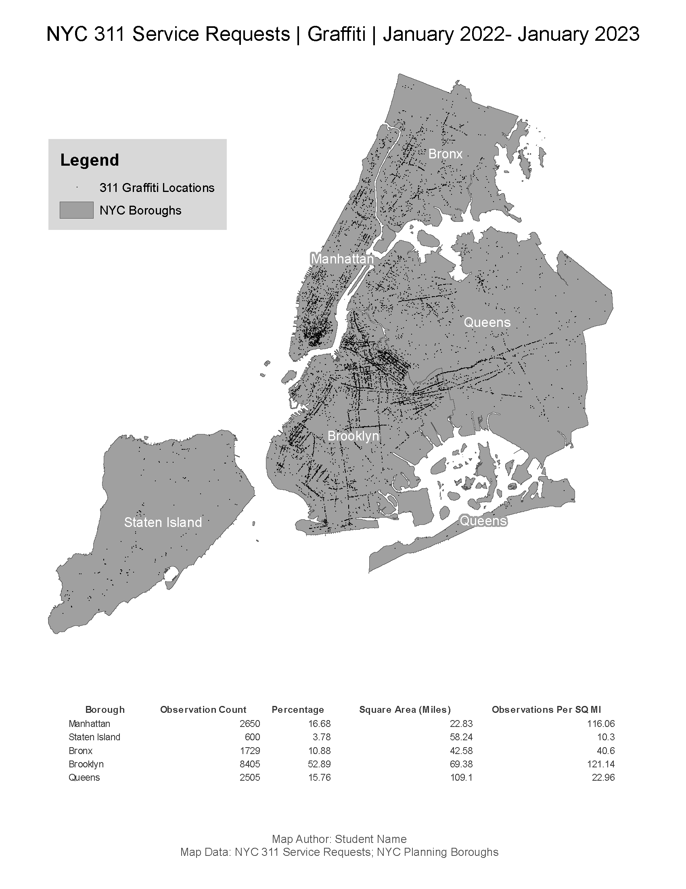

Preamble
In this second assignment, you will utilize the Class 2 Technical Lab as a guide to complete your second mapping project utilizing the 311 NYC Dataset.
The Class 2 Technical Lab should be used extensively to aid with the completion of the second assignment due Sunday evening (02/04/24) at 11:59pm.
Unlike the lab, you are tasked with choosing an unique filter approach to this second map. Your map should feature consideration of the following:
Filter Condition 1: What will be the time dimension (
Create Date) of your mapping? Is a certain time duration important to the mapping, i.e. events tied to a certain NYC policy, natural disaster or weather period?Filter Condition 2: What will be the 311
Complaint Typetheme of your mapping?Filter Condition 3: As a further option, consider a filter on the
Descriptordimension to narrow yet further the return requests.Page/paper orientation and size: will your final output be landscape or portrait orientation? Either letter or tabloid, landscape or portrait is acceptable for this second mapping assignment.
To help with the filter conditions, review this short video below (Password = 311):
Data
Like the technical lab, utilize the 311 How To Guide to start your filter process.
Make sure to apply filters to your data query; tens of thousands of event points is better for the mapping than hundreds of thousands. ‘Constraining’ the data is an efficiency method in this assignment.
You will also need to access and download the NYC borough polygons as your basemap thematic layer for your event points. Refer to the technical lab for this process, direct download as follows:
Remember the borough polygons will be compressed as a zip directory; you need to first uncompress and place into your assignment folder and connect the data via ArcCatalog for your assignment .mxd.
Class 2 Readings:
This week’s second reading will be from the Essentials of Geographic Information Systems textbook.
The Class 1 quiz (02/05/2024 - open at 7AM) will features 10 questions covering content in the textbook reading.
Reading:
- Essentials of Geographic Information Systems textbook - Chapter 2 - Data, Information, and Where to Find Them, pages 29 - 43.
Assignment Step 1
- Navigate to a directory folder that you make for assignment 2; create an assignment
.mxd, placing it within your assignment 2 directory. Establish an ArcCatalog connection to the assignment 2 folder - the location where you will place both the delimited text (.csv) and the NYC Borough Polygons.
Assignment Step 2
- Determine your mapping theme and conduct the filtering process at the data source discussed and prompted in the preamble section above. Download the resulting
.csvinto your assignment directory. Connect the data via ArcCatalog. Do the same for NYC Borough Polygons.
Assignment Step 3
- Load you
.csvinto your assignment.mxd; do the same for the NYC Borough Polygons. Map the delimited text.csvto points features; overlay them to the NYC Borough Polygons, adjust the map projection for the Data Frame, and finally save the.mxd.
Assignment Step 4
- Spend time manipulating the size and color of your event points relative to the NYC Borough Polygons. Begin to work and preview in Layout View as well as Data View. The cartographic design goal is to display all your event points so that the larger pattern of the data is clear, minimizing ‘clumping’ of numerous event points. Utilize bookmarks throughout your design process.
Assignment Step 5
- With your points and polygons ordered and designed for best cartographic presentation, move to the Tabulate Intersection tool process to summarize your results in table format. Also create a rate for your event points per borough in you table. Import your final table into your map output. When complete, move along to the final cartographic and table design, outputting your work to PDF for submission in Canvas for assignment 2.
Concluding Remarks
Utilize the example maps below for the required map elements - map title, author notation, legend, table and the map itself.
Upload your assignment.2.pdf to the CANVAS location for the second class assignment. Save the project directory with all project materials in a location you’ve set aside for completed assignments for the course.
Class 2 Assignment Example:

c2assignment.png